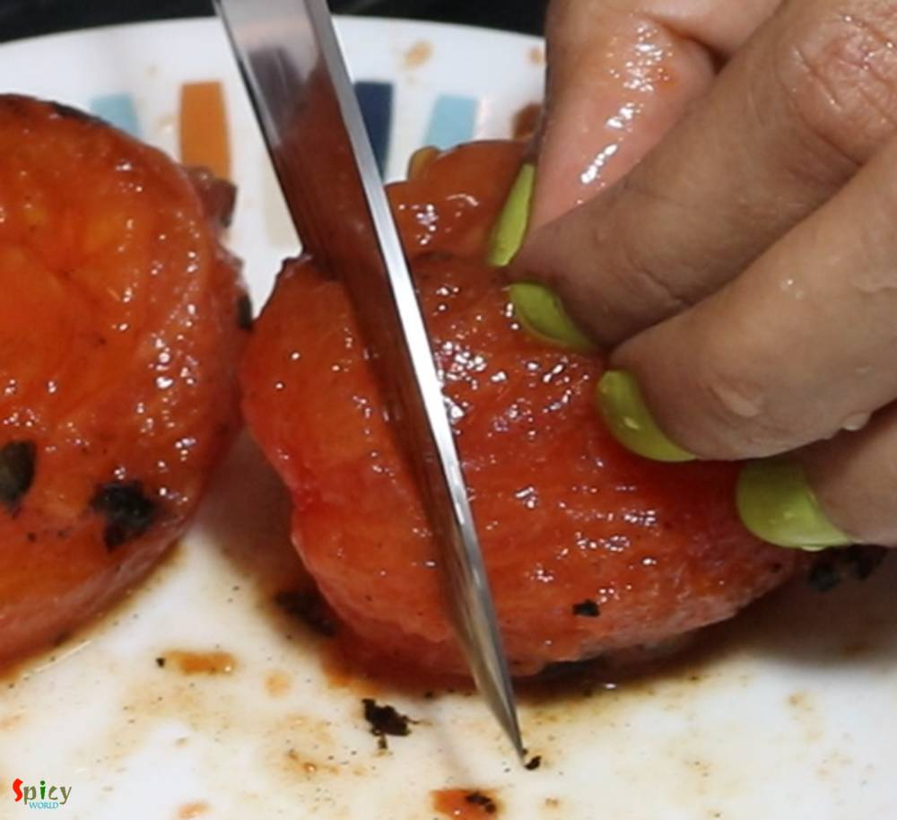

Simple and Easy Recipes
Momo's Chutney (smokey, hot & spicy)
© 2016 Spicy World, Published on: Feb 4, 2019
Whats the fun in having Momos without chutney?sounds so boring. This red colored hot and spicy chutney has garlicky and roasted tomato flavor and tastes awesome not only with momos but you can pair it with samosas, kachoris, chicken pakoras etc. In few shops you will find 3 types of momo's chutney - red, yellow and white. But this red hot chutney is very common and popular all across India. Do try this recipe in your kitchen and let me know how it turned out.

Ingredients
- 3 large tomatoes.
- 4 dry red (hot) chilies.
- 6 big cloves of garlic.
- Salt and sugar as per your taste.
- Water.


Steps
Roast the tomatoes over flame or heat until they become soft.
Then remove them from heat and let them cool down.
In the meantime discard the seeds of dry red chilies. My chilies were very very hot that is why I used only 4.
Now pour 1/4th cup of boiling hot water all over the chilies and let them rest for 10 minutes.
Discard the charred skin of tomatoes. You can also boil the tomatoes instead of roasting.
Remove the top hard part of the tomatoes with a knife.
Make a smooth paste out of those tomatoes, garlic, soaked chilies (discard the water), some salt and a Teaspoon of sugar.
Taste the chutney and adjust it according to your taste. Then pour it in a bowl.
Your momo's chutney is ready to serve.
Serve this with steamed momos.